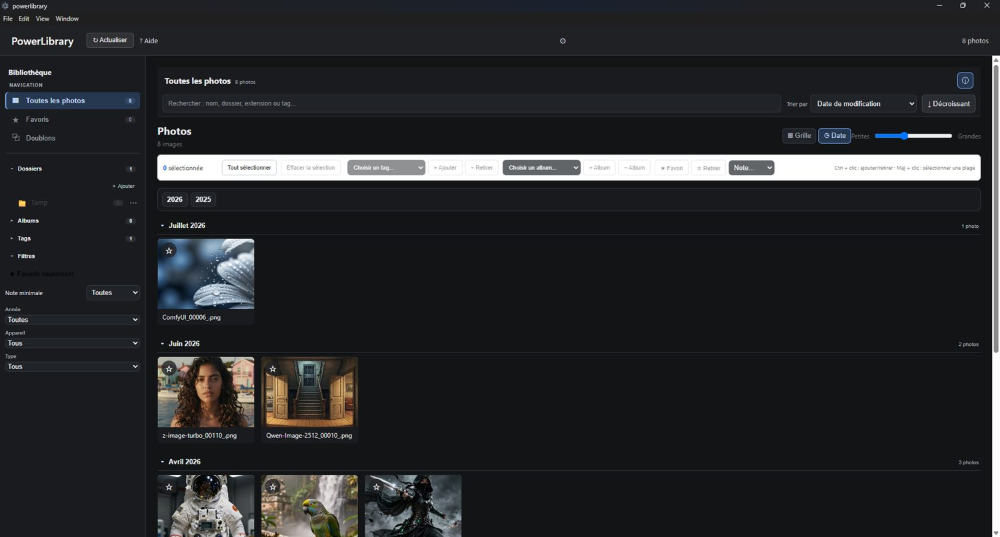
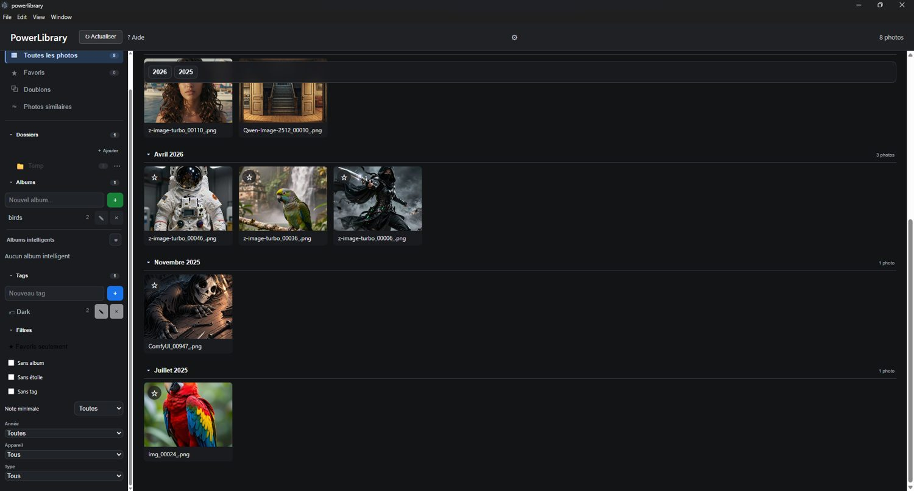
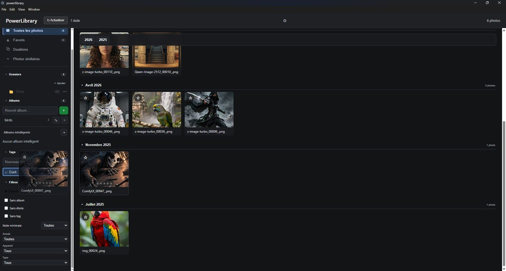
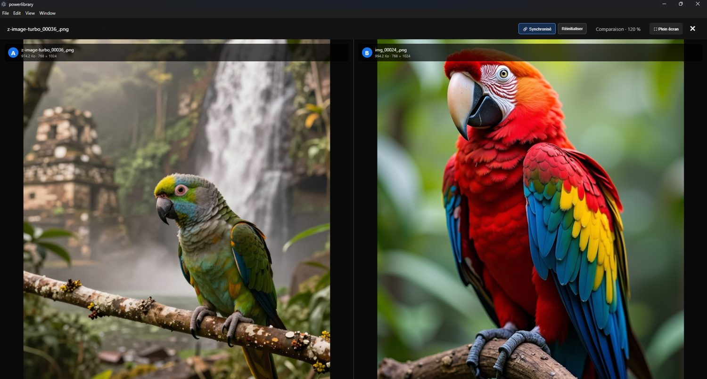
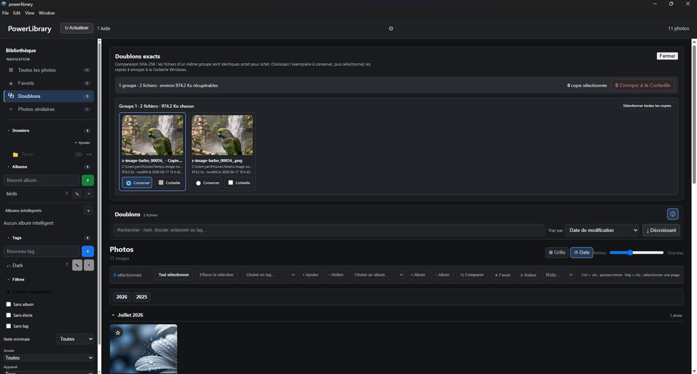
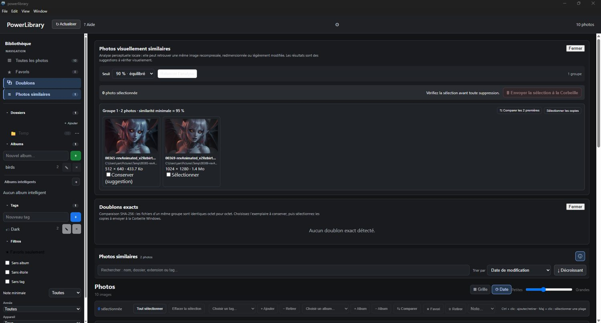

GUIDE UTILISATEUR
Bienvenue dans PowerLibrary
PowerLibrary est un gestionnaire de photos local pour Windows conçu pour parcourir, classer, retrouver et comparer rapidement vos images sans déplacer vos originaux dans une base de données propriétaire.
Vos photos restent dans leurs dossiers d'origine sur vos disques. PowerLibrary conserve un catalogue local contenant les informations nécessaires à leur organisation.

Démarrage rapide
- Ajoutez un dossier de photos. Choisissez un dossier racine à indexer. Les sous-dossiers sont parcourus récursivement.
- Laissez PowerLibrary construire le catalogue. Les miniatures et métadonnées utiles sont mises en cache pour accélérer les consultations suivantes.
- Parcourez la galerie. Utilisez l'arborescence de dossiers, la chronologie, la recherche ou les filtres.
- Classez vos images. Ajoutez des tags, des étoiles, des favoris ou placez les photos dans des albums.
Bibliothèque et dossiers
Ajouter un dossier
Ajoutez les dossiers racines qui contiennent vos photos. PowerLibrary analyse leurs sous-dossiers et les présente dans une arborescence semblable à l'Explorateur Windows.
Actualiser la bibliothèque
L'actualisation recherche les changements sur disque. Les métadonnées déjà indexées peuvent être réutilisées lorsqu'un fichier n'a pas changé, ce qui accélère les analyses suivantes.
Disques externes indisponibles
Si un dossier catalogué se trouve temporairement sur un disque externe déconnecté, PowerLibrary conserve son catalogue plutôt que de considérer immédiatement les photos comme supprimées. Reconnectez le disque avant d'actualiser si vous souhaitez travailler avec ces fichiers.
Retirer une photo de la bibliothèque
Le menu contextuel d'une photo permet de la retirer du catalogue sans supprimer le fichier original.
Retirer un sous-dossier de PowerLibrary
Dans l’arborescence, le menu contextuel d’un sous-dossier propose ➖ Retirer ce sous-dossier de PowerLibrary. Cette action retire du catalogue les photos de cette branche sans supprimer les fichiers sur le disque. L’exclusion est mémorisée : une actualisation ultérieure du dossier racine n’importe pas de nouveau ce sous-dossier.
NOUVEAUTÉ 1.0.8
Interface simplifiée et actions contextuelles
PowerLibrary 1.0.8 réorganise les commandes pour laisser davantage de place aux photos. La barre latérale regroupe la navigation, les dossiers, albums, tags et filtres, tandis que les actions liées aux photos apparaissent au moment où elles sont utiles.
Barre d’actions de sélection
Lorsqu’une ou plusieurs photos sont sélectionnées, une barre d’actions contextuelle donne accès aux commandes adaptées à la sélection, notamment les favoris, la notation, la comparaison et la planche-contact.
Menus contextuels
Le clic droit reste disponible sur les photos, dossiers, albums et tags. Les menus ont été harmonisés afin de présenter les actions directement liées à l’élément visé.
Densité de l’interface
Les préférences proposent trois densités : Compacte, Normale et Grande. Elles ajustent la taille des éléments de navigation et des menus sans modifier le contenu de la bibliothèque.
États vides et opérations longues
Lorsqu’un filtre ne retourne aucune photo, PowerLibrary affiche un état vide explicite avec les actions utiles pour revenir à la bibliothèque. Pendant une analyse ou une opération longue, un encadré visible indique que le traitement est en cours.
Organiser les photos
Favoris et étoiles
Marquez vos images favorites et attribuez une note de 1 à 5 étoiles. Une photo sans note est considérée comme « Sans étoile ».
Tags
Les tags servent à décrire librement une photo : personnes, lieux, événements, thèmes ou toute autre catégorie utile. Une photo peut posséder plusieurs tags.
Albums manuels
Un album regroupe des photos sans déplacer leurs fichiers. Une même photo peut appartenir à plusieurs albums.
Albums intelligents
Les albums intelligents se remplissent automatiquement selon leurs critères. Ils peuvent combiner plusieurs règles, par exemple favoris, note minimale, année, appareil, extension, tag, absence de tag, absence d'album manuel ou photos récentes.
Utilisez un album manuel lorsque vous choisissez explicitement son contenu. Utilisez un album intelligent lorsque vous voulez une vue qui se met à jour automatiquement selon des règles.

GLISSER-DÉPOSER
Classer par glisser-déposer
Le glisser-déposer accélère le classement, particulièrement pour une seule photo. La barre d'actions reste disponible pour les opérations sur plusieurs images.
Glissez un tag de la barre latérale sur une vignette pour l'appliquer.
Glissez une photo sur un tag pour lui appliquer ce tag.
Glissez une photo sur un album manuel pour l'y ajouter.
Si la photo glissée fait partie d'une sélection, l'action s'applique à toute la sélection.

Filtres et recherche
Les filtres peuvent être combinés pour réduire rapidement la galerie. PowerLibrary propose notamment les favoris, la note minimale, l'année, l'appareil et le type de fichier.
Photos à classer
- Sans album : aucune appartenance à un album manuel.
- Sans étoile : aucune note attribuée.
- Sans tag : aucun tag associé.
En activant les trois à la fois, vous obtenez une vue très pratique des photos qui restent à classer.
Recherche
Utilisez la recherche pour retrouver rapidement des photos à partir des informations indexées, notamment le nom, le chemin, l'extension et les tags.
Visionneuse
Ouvrez une photo pour l'examiner en grand. La visionneuse utilise l'image originale et permet de naviguer dans l'ensemble correspondant aux filtres actifs.
- Zoom avant et arrière.
- Déplacement de l'image lorsqu'elle est agrandie.
- Réinitialisation du zoom.
- Navigation précédente / suivante.
- Mode plein écran.
- Affichage des métadonnées disponibles : dimensions, date, appareil, objectif, ISO, ouverture, exposition et focale.
Comparer deux photos
Sélectionnez exactement deux photos puis utilisez Comparer. Les deux originaux s'affichent côte à côte avec leurs informations.
Le mode de comparaison propose un zoom et un déplacement synchronisés pour examiner exactement la même zone des deux images. Passez en mode indépendant lorsque vous souhaitez manipuler chaque photo séparément.

Doublons et photos similaires
Doublons exacts
La recherche de doublons exacts compare le contenu des fichiers à l'aide d'une empreinte SHA-256. Elle sert à repérer des fichiers réellement identiques.

Photos similaires
La recherche de photos similaires utilise une empreinte perceptuelle afin de repérer des images visuellement proches même si leurs fichiers ne sont pas identiques. Le seuil de similarité permet d'être plus large ou plus strict.

Deux photos similaires ne sont pas nécessairement des doublons. Utilisez la comparaison avant de choisir les copies à retirer.
Suppression sécurisée
Lorsqu'une photo est envoyée à la Corbeille depuis ces outils, PowerLibrary demande à Windows de déplacer le fichier dans la Corbeille. L'entrée du catalogue n'est retirée qu'après réussite de l'opération.
NOUVEAUTÉ 1.0.8
Portée et exclusions des analyses de similarité
Les analyses de photos similaires peuvent être limitées à une portée choisie afin d’éviter de parcourir inutilement toute la photothèque. Les dossiers racines peuvent également être exclus de l’analyse de similarité puis réintégrés ultérieurement.
L’exclusion d’un dossier des analyses de similarité n’enlève pas ses photos du catalogue. À l’inverse, Retirer ce sous-dossier de PowerLibrary retire cette branche du catalogue tout en conservant les fichiers sur le disque.
NOUVEAUTÉ 1.0.7
Carte / Lieux
La vue 📍 Lieux affiche sur une carte les photos qui possèdent des coordonnées GPS dans leurs métadonnées EXIF. Cliquez sur un marqueur pour accéder à la photo correspondante.
NOUVEAUTÉ 1.0.7
Moments
La vue 📅 Moments regroupe automatiquement les photos prises à proximité dans le temps. Un changement de journée crée un nouveau moment et un intervalle important entre deux prises sépare également les séries.
Les Moments sont calculés à partir du catalogue : ils ne déplacent pas les fichiers et ne créent pas d'albums supplémentaires.
NOUVEAUTÉ 1.0.7
Centre de nettoyage
La vue 🧹 Nettoyage aide à repérer les photos qui méritent une vérification : faible résolution, très petits fichiers, absence de date EXIF ou métadonnées manquantes. Le total compte les photos uniques même lorsqu'une image répond à plusieurs critères.
Le centre donne aussi accès aux outils de doublons exacts et de photos similaires. Aucune suppression n'est automatique.
NOUVEAUTÉ 1.0.7
Meilleure photo
PowerLibrary peut analyser une série de photos visuellement similaires et suggérer celle qui présente le meilleur équilibre technique. L'analyse locale tient compte notamment de la netteté, de l'exposition et de la résolution.
La meilleure photo techniquement n'est pas nécessairement votre photo préférée. Utilisez la comparaison avant de choisir ou de supprimer des images.
NOUVEAUTÉ 1.0.7
Recherche universelle
La section 🔎 Recherche permet de retrouver photos, tags, albums et dossiers depuis une seule zone. Pour les photos, la recherche peut exploiter le nom, le chemin, l'extension, les dates, l'appareil, l'objectif, les favoris et la notation.
Plusieurs termes peuvent être combinés pour préciser une recherche, par exemple Canon 2026 ou favori 5 étoiles.
NOUVEAUTÉ 1.0.7
Planche-contact, impression et PDF
Sélectionnez plusieurs photos puis choisissez 🖨️ Planche-contact. Vous pouvez choisir 2, 3 ou 4 colonnes, le format Lettre ou A4, un titre et l'affichage du nom de fichier, de la date et de la notation.
La planche peut être envoyée au système d'impression Windows ou enregistrée en PDF. Les fichiers photo originaux ne sont jamais modifiés.
Sauvegarde et restauration
La sauvegarde de PowerLibrary protège le catalogue : organisation, métadonnées indexées et données associées à la bibliothèque.
La restauration vérifie le fichier de sauvegarde et remplace le catalogue actif après les contrôles prévus par l'application.
Apparence et maintenance
Thème
PowerLibrary prend en charge les apparences claire, sombre et système, ainsi que les options d'accent disponibles dans l'application.
Densité
Choisissez Compacte, Normale ou Grande selon l’espace disponible et votre préférence de lecture. Ce réglage est conservé localement.
Cache des miniatures
Les miniatures sont conservées dans un cache local afin d'accélérer la galerie. Ce cache peut être nettoyé depuis les outils de maintenance; les miniatures seront recréées au besoin.
Version et mises à jour
La fenêtre À propos affiche la version de l'application et des statistiques de bibliothèque. PowerLibrary peut vérifier la dernière version publiée et signaler lorsqu'une mise à jour est disponible.
Raccourcis et astuces
| Action | Utilisation |
|---|---|
| Ctrl+F | Ouvrir la recherche universelle. |
| Ctrl+A | Sélectionner toutes les photos visibles. |
| Ctrl+Maj+A | Effacer la sélection. |
| Échap | Fermer la recherche ou effacer la sélection selon le contexte. |
| F | Basculer le statut favori de la sélection. |
| 0 à 5 | Attribuer une note à la sélection; 0 retire la note. |
| C | Comparer lorsque exactement deux photos sont sélectionnées. |
| P | Ouvrir la planche-contact pour la sélection. |
| F11 | Basculer le plein écran de la visionneuse. |
| Molette dans la visionneuse | Zoomer ou dézoomer. |
| Glisser l'image agrandie | Déplacer la zone visible. |
| Double-clic en comparaison | Réinitialiser la vue de comparaison. |
| Clic droit sur une photo | Ouvrir avec l'application par défaut, copier le chemin, ouvrir l'emplacement, retirer du catalogue ou envoyer à la Corbeille. |
| Glisser une photo | Déposer sur un tag ou un album manuel. |
| Glisser un tag | Déposer sur une photo. |
FAQ / dépannage
PowerLibrary copie-t-il mes photos dans sa base de données ?
Non. Les fichiers originaux restent dans leurs dossiers. Le catalogue conserve les informations nécessaires à leur gestion.
Que se passe-t-il si mon disque externe est débranché ?
Le catalogue des dossiers temporairement indisponibles est conçu pour être conservé. Reconnectez le disque pour accéder de nouveau aux originaux.
« Retirer de la bibliothèque » supprime-t-il mon fichier ?
Non. Cette commande retire l'entrée du catalogue mais laisse le fichier sur le disque.
Quelle différence avec « Envoyer à la Corbeille » ?
Cette commande demande à Windows de déplacer le fichier original vers la Corbeille puis retire son entrée du catalogue si l'opération réussit.
Pourquoi certaines métadonnées sont-elles absentes ?
Elles dépendent des informations EXIF présentes dans le fichier. Toutes les images ne contiennent pas les mêmes métadonnées.
Pourquoi un album intelligent refuse-t-il le glisser-déposer ?
Son contenu est déterminé automatiquement par ses critères. Modifiez les critères ou les propriétés de la photo plutôt que d'y ajouter manuellement une image.
La sauvegarde PowerLibrary sauvegarde-t-elle mes originaux ?
Non. Sauvegardez vos fichiers photo séparément.